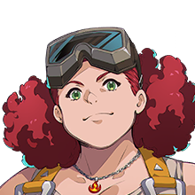

…ヴォールスとクレアは
………
そう、ですか
武器見せな
長旅だったんだろ
仇を討ってくれとは言わないよ
けど、あいつらの無念を晴らしてほしい
アーサー王がどうなっちまったのか…
ガウェインやラグネルが
なんでああなっちまったのか
謎を、明かして欲しいんだ
View script in lua
|
【ノワール】 …ヴォールスとクレアは |
|  |
【おかみさん】 ……… |
|
【ノワール】 そう、ですか |
| 【おかみさん】 武器見せな 長旅だったんだろ |
|
| 【おかみさん】 仇を討ってくれとは言わないよ |
|
| 【おかみさん】 けど、あいつらの無念を晴らしてほしい アーサー王がどうなっちまったのか… |
|
| 【おかみさん】 ガウェインやラグネルが なんでああなっちまったのか |
|
| 【おかみさん】 謎を、明かして欲しいんだ |